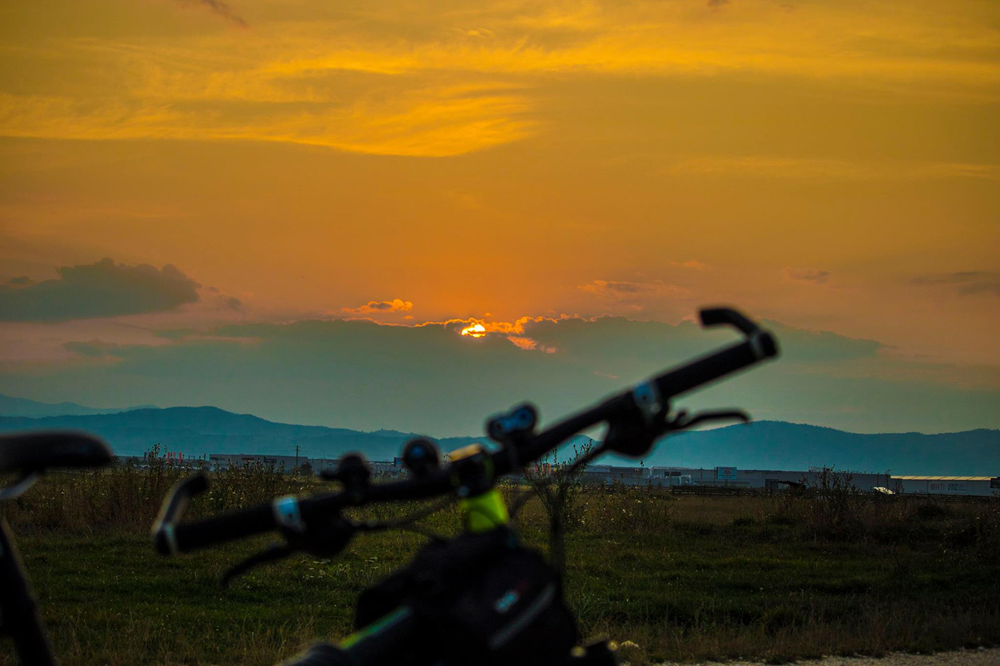
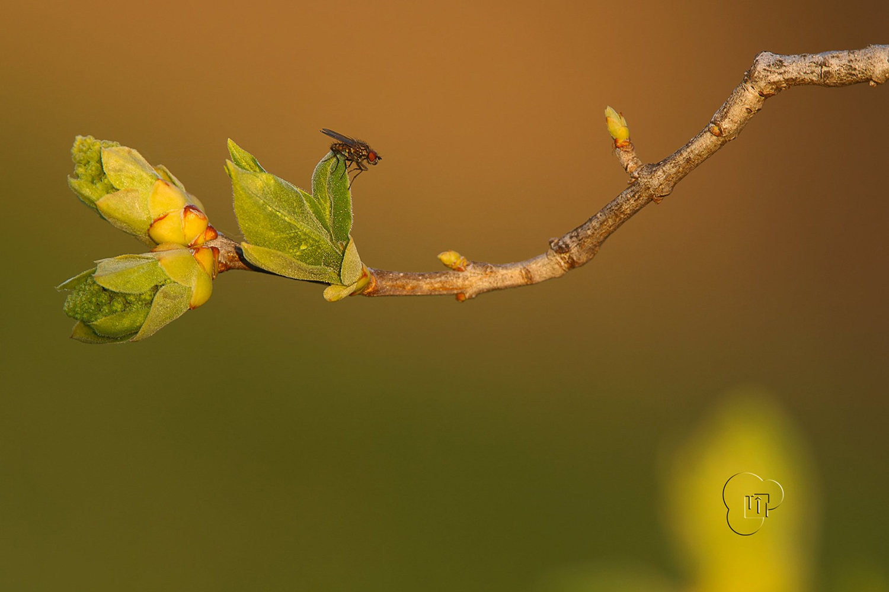

Cycling
De mic copil imi placea sa ma plimb cu bicicleta, dar abia in 2015 am dezvoltat o pasiune pentru ciclism, astfel am inceput sa pedalez constant si sa plec in ture lungi chiar si de 400 km...
Photos
Datorita job-ului, am avut sansa sa pun mana pe un DSLR acum ceva timp, mi-a placut si am zis, de ce nu? Am achizitionat un aparat foto cu care am realizat zeci de mii de poze...
Travels

Nimic nu este mai frumos decat atunci cand reusesc sa plec intr-o vacanta, imi place mult sa calatoresc, sa cunosc alte culturi, alti oameni, stiluri de viata, preparate culinare...